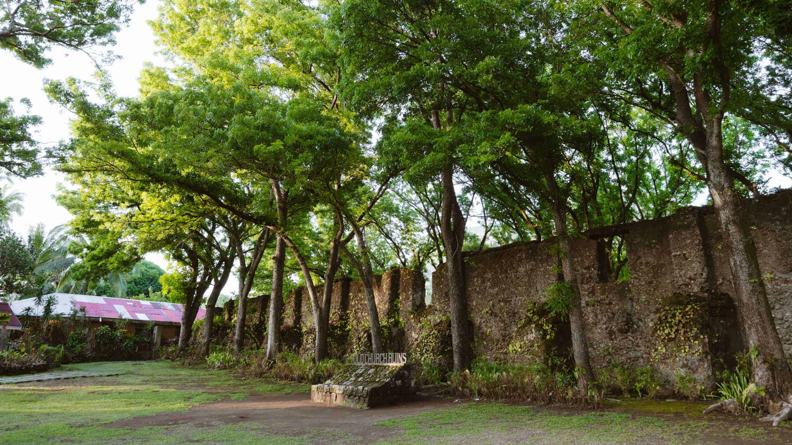
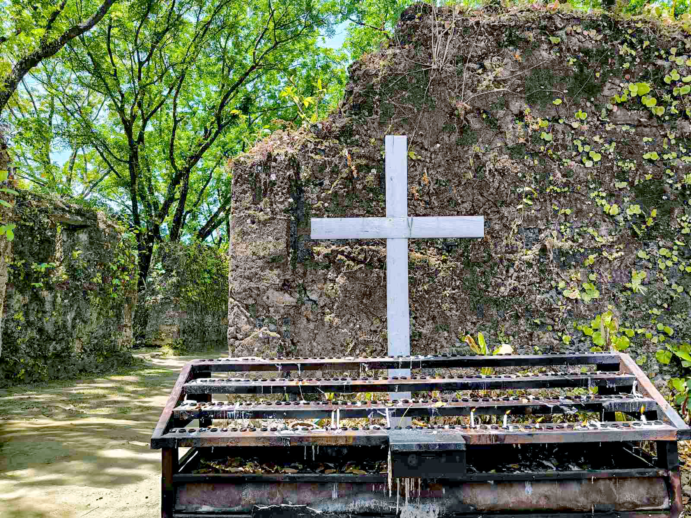
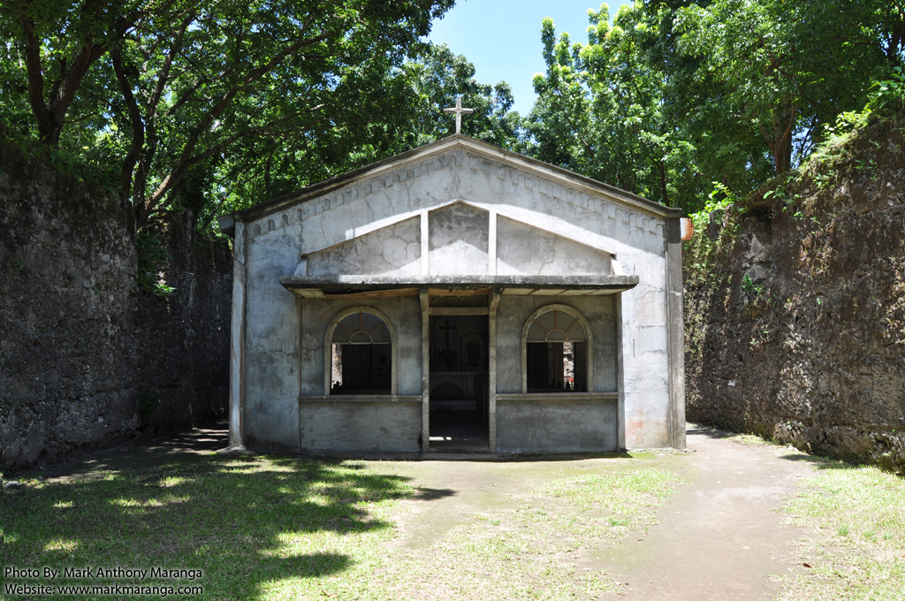

Sacred Stones and Ancient Walls
Camiguin is home to several remarkable colonial-era churches and ruins that stand as testament to the island's deep Catholic faith and Spanish heritage. The Old Ruins of Gui-ob Church in Catarman is perhaps the most iconic — a hauntingly beautiful skeleton of a 17th-century church destroyed by the 1871 volcanic eruption of Mt. Vulcan. Its walls, now overgrown with moss and vegetation, create a striking image of nature reclaiming what was once built by human hands.
The Church of the Immaculate Conception in Mambajao, the provincial capital, remains an active place of worship and features classic Spanish Baroque architecture. A walk through Camiguin's municipalities reveals several more well-preserved churches, each with its own story of faith and survival.





Old Gui-ob Ruins
The ruins of the 17th-century Gui-ob Church in Catarman, destroyed by the 1871 eruption. A deeply atmospheric and historically significant site open to the public.
Mambajao Church
The Church of the Immaculate Conception is the oldest active parish in Camiguin, featuring beautiful Spanish colonial architecture and centuries of history.
Visitor Tips
Dress respectfully when visiting active churches. The ruins are open-air and free to visit. Early morning light makes for the best photographs of the old stone walls.